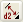
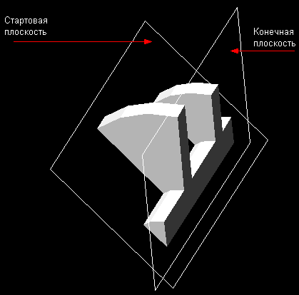

|
| Revolve (Построение тела вращения) |
|
Команда amrevolve используется для вращения профиля относительно выбранной оси для создания твердотельного элемента. Ось может быть кромкой
модели, рабочей осью или линией эскиза, включенной в профиль. Если линия эскиза не является частью контура профиля, её тип линии должен отличаться
от типа линии, установленного в системной переменной AMSKSTYLE. Опция вращения Angle позволяет задать угол поворота, а используя опцию Cut, можно
создавать карманы, полости, формы для литья или пресс-формы.

Браузер |
Нажатием правой клавиши мыши на иконке Профиль (Profile) окна браузера вызовите контекстное меню , где выберите пункт Revolve. |

Кнопка инструментов
(Revolve) |
 |
Меню |
Part -> Sketched Features -> Revolve |
Команда |
AMREVOLVE |
|
| Диалоговое окно Revolution Feature |
|

OPERATION
Определяет Булеву операцию вращения.
Base. Добавляет материал, создавая первый элемент в детали.
Cut. Вырезает объем вращения из активной детали.
Join. Добавляет объем вращения к активной детали.
Intersect. Создает новый элемент из общего объема между
существующей деталью и элементом вращения.
Split. Создает новую деталь из общего объема между существующей
деталью и элементом вращения.
TERMINATION
Определяет метод для завершения вращения.
By Angle. Поворачивает профиль на указанный угол и отображает
стрелки направления.
Full. Поворачивает профиль на 360°.
To Face. Заканчивает элемент на выбранной грани.
To Plane. Заканчивает элемент на выбранной плоскости..
From To. Определяет начальную и конечную плоскости.
Mid Plane. Поворачивает профиль одинаково в обоих направлениях, заканчивая
его полным указанным углом.
SIZE
Angle.Определяет угол вращения. Заданный по умолчанию угол –90°.
|
| Пример создания объёмного тела методом вращения |
|
Шаг 1 |
Создаётся эскиз (планируем как половину окончательной фигуры) |
Шаг 2
 |
Эскиз отпрофилируется при помощи команды AMPROFILE |
Шаг 3
 |
Введём AMFARDIM .
Щелкнем мышью на одной из сторон, а затем — в стороне от нее.
Введено размерное ограничение. |
Процесс продолжается до тех пор, пока весь эскиз
профиля не будет полностью образмерен.
Шаг 4
|
Для выполнения вращения полностью соразмеренного эскиза введём AMREVOLVE.
Выберем ось вращения. |
Подсказка: представьте себе ось вращения в виде точки, вокруг которой осуществляется вращение.
В данном случае оставьте установки по умолчанию и выполните вращение на все 360°.
Щелкните мышью на кнопке ОК
Теперь профиль представляет собой трехмерное тело.
| |
Лучший ракурс просмотра откроется, если воспользоватся
функцией трехмерного вращения |
Внимание! После завершения двухмерного эскиза перейдём
к изометрической проекции, что поможет лучше увидеть тело вращения. Для
быстрого вывода на экран изометрий просто введём с клавиатуры 8.
Теперь рассмотрим существующие опции операции вращения профиля.
Примеры:
By Angle(На угол) (В данном случае угол поворота равен 180°).
From the MidPlane(От серединной плоскости) Профиль вращается в обоих направлениях от плоскости эскиза.
From-To (От-до) (От стартовой плоскости до конечной плоскости)

Если в окне Operation вы выберете опцию Join, то в меню опций вращения появляется
расширенный список возможных вариантов.
В качестве точек точного определения места завершения вращения могут
быть применены плоскости и грани.
При использовании опции Join исходная базовая
форма и тело вращения становятся единым целым.
С помощью опции Cut в базовой детали можно
формировать полости уникальной формы.
После создания базовой детали, на ее грани или поверхности создается
новая эскизная плоскость. Эскиз полностью образмеривается, после чего
осуществляется его вращение, при этом в окне меню Operation следует выбрать опцию Cut.
Используя опцию Cut, можно создавать карманы,
полости, формы для литья или пресс-формы.
Опция операции Intersect позволяет получать
тела уникальной формы, которые представляют собой область перекрытия исходного
тела и тела, возникающего в результате вращения профиля.
Использование опции Split позволяет создавать
как полость, так и объемное тело вращения. Ее результаты во многом схожи
с теми, которые дает опция Intersect, но в
данном случае остаются обе детали.
|